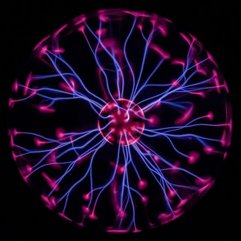
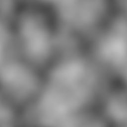
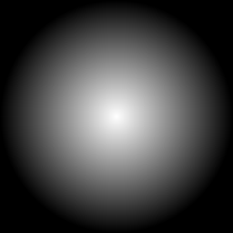
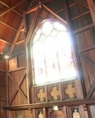
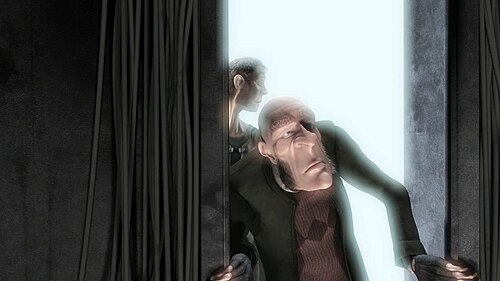
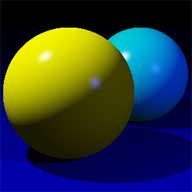
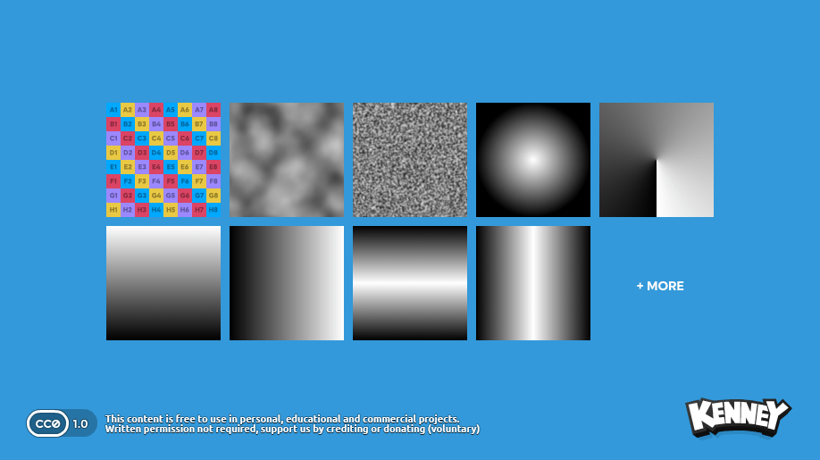
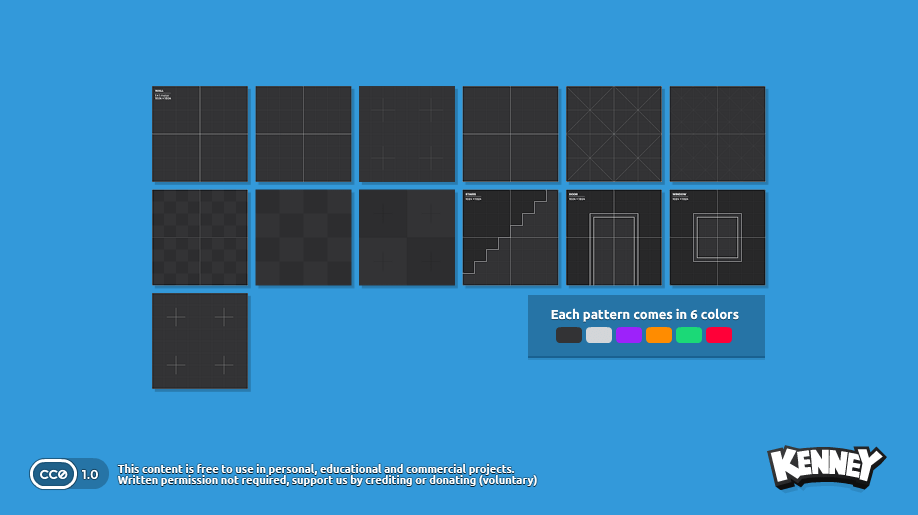
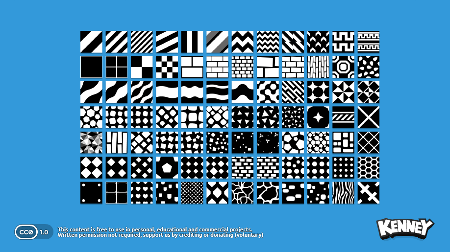

📓 Notas de Estudo — Rendering em frame-3
Caderno pessoal, documento vivo: cada seção é um tema de rendering estudado numa sessão, com data. Vai crescendo conforme novos assuntos aparecem — não é spec nem ADR, é anotação de aprendizado, âncorada no código real do projeto.
Roadmap de efeitos do reator
Board de acompanhamento dos efeitos de shader discutidos para game/flare_reactor (ver seção abaixo). Atualizar o status conforme cada um é implementado.
| Efeito | Status | Esforço |
|---|---|---|
| Fresnel rim glow | Concluído | Baixo |
| Scrolling core texture (energy flow) | Planejado | Baixo |
| Emissive pulse (ligado ao estado do Reactor) | Planejado | Médio |
| Fake bloom (threshold + passe extra) | Planejado, depois | Médio/Alto (novo passe de render) |
| Especular por material (metalness) | Planejado, depois | Médio |
| Sol direcional calibrado contra o cubemap | Concluído | Baixo |
Shader effects para o reator 2026-08-08
Ponto de partida: game/flare_reactor já tem um Blinn-Phong básico (src/game/flare_reactor/lighting.h/.cpp, assets/shaders/glsl330/lighting.vs/fs), portado do exemplo shaders_basic_lighting do raylib — uma luz direcional "sun" + um point light cyan perto do núcleo do reator. Cada um dos 13 materiais do modelo do reator (Sketchfab "Reactor Nuclear") tem sua própria instância de shader compilada (não uma compartilhada) — decisão registrada no header de lighting.h: UnloadModel → UnloadMaterial do raylib dá UnloadShader sem refcount, então compartilhar uma instância entre materiais causaria double-free quando o modelo for descarregado.
Esse padrão — um uniform por-frame empurrado pra N shaders independentes via Lighting::Update(registry, viewPos) — é o ponto de extensão natural pra qualquer efeito novo que precise de um uniform global (tempo, intensidade de pulso etc.): não criar um mecanismo novo, estender esse loop.
1. Fresnel rim glow
O que é: brilho que aparece mais forte nas bordas de um objeto, quando a normal da superfície é quase perpendicular à direção da câmera. É o efeito clássico de "contorno luminoso" em sci-fi (energy shields, reatores, hologramas). Fisicamente é uma aproximação do efeito Fresnel real (reflectância que varia com o ângulo de incidência), mas aqui é só um truque visual barato — não precisa ser fisicamente correto.
Fórmula: quanto mais a normal N se afasta da direção pra câmera V, mais forte o termo:
float fresnel = pow(1.0 - max(dot(normal, viewD), 0.0), power);
finalColor.rgb += fresnel * rimColor.rgb * rimIntensity;viewD já existe em lighting.fs (calculado a partir do uniform viewPos, que Lighting::Update já empurra todo frame). power tipicamente entre 2 e 4 — quanto maior, mais fino o contorno.
assets/shaders/glsl330/lighting.fs ganhou 3 uniforms novos (vec3 rimColor, float rimPower, float rimIntensity) e a linha do termo aditivo, logo antes da correção de gama:
float fresnel = pow(1.0 - max(dot(normal, viewD), 0.0), rimPower);
finalColor.rgb += fresnel*rimColor*rimIntensity;normal e viewD já existiam no shader (usados pelo termo especular do Blinn-Phong) — nenhuma mudança em lighting.vs foi necessária.
src/game/flare_reactor/lighting.cpp ganhou os valores fixos, no mesmo padrão de kLights (constantes estáticas, documentadas como "revisitar se precisar reagir a estado de jogo"):
constexpr Color kRimColor = {110, 210, 255, 255}; // mesmo cyan do point light do núcleo
constexpr float kRimPower = 3.0f;
constexpr float kRimIntensity = 1.5f; // subiu de 0.6 pra 1.5 (2026-08-08) pra ficar visível de caraSetados uma vez em SetupRim(Shader&), chamada de dentro de LoadLightingShaderInstance() — ou seja, roda tanto pro shader de primitives quanto pra cada uma das 13 instâncias por-material do reator (ApplyToModel), sem precisar de refresh por frame (diferente de viewPos, que muda com a câmera): são valores estáticos, então um SetShaderValue na criação já basta.
Build validado com make GAME=flare_reactor (paths dos vendors documentados no skill run) — compilou sem warnings. Checagem visual fica por conta do usuário (ver .claude/skills/run/SKILL.md: validação visual não é mais um passo automático daqui pra frente).
2. Scrolling core texture (energy flow)
O que é: animar uma textura de "energia" deslizando pela superfície do núcleo, deslocando as coordenadas UV ao longo do tempo. Dá sensação de fluido/plasma em movimento sem precisar de partículas.
vec2 scrolledUV = fragTexCoord + vec2(time * scrollSpeed, 0.0);
vec4 energyColor = texture(energyTex, scrolledUV);
finalColor.rgb += energyColor.rgb * energyIntensity;Precisa de um uniform float time novo — mesmo ponto de entrada do Fresnel: estender Lighting::Update pra também setar esse uniform em todas as instâncias de shader (a primitives shader e as 13 do modelo, via ApplyToModel).


kenney_development-essentials/Noise/perlin-noise.png. Tingida de ciano + deslizada em UV, dá o "fluido" acima sem precisar desenhar nada — ver seção Kenney abaixo.3. Emissive pulse ligado ao estado do Reactor
Contexto: o BeaconPulseProcess (RFC-0001 Phase 4) já faz lerp de Renderable::color em direção a RED quando o beacon é ativado, e isso hoje se propaga via colDiffuse (o tint em lighting.fs) — multiplicativo: o objeto fica "tingido" de vermelho, mas não parece emitir luz própria.
Ideia: separar isso num termo emissivo aditivo, controlado por um uniform float pulseIntensity (0 = inativo, 1 = pico do pulso) — mais parecido com "o núcleo está brilhando" do que "o objeto mudou de cor".
colDiffuse existente: multiplicar por tint escurece partes que já são escuras (sombra), então nunca vai parecer "luz saindo". Um termo aditivo, independente da iluminação recebida, é o que faz o núcleo parecer fonte de luz mesmo em ângulos sem luz direta.

kenney_development-essentials/Gradient/gradient-radial.png. Multiplicada por pulseIntensity e tingida de vermelho, dá o "núcleo brilhando de dentro pra fora" sem precisar calcular a distância no shader.4. Fake bloom (threshold + passe extra) — depois
Bloom de verdade precisa de post-processing: renderizar a cena pra uma textura, extrair pixels acima de um threshold de luminância, borrar (blur gaussiano), e compor de volta. O projeto ainda não tem nenhum passe de post-processing (rlLoadFramebuffer ou equivalente) — isso é mudança de arquitetura, não só shader, então fica pra depois do Fresnel + scroll + pulse, que já cobrem boa parte da sensação "glow" sem precisar de um passe novo.


5. Especular por material (metalness) — depois
Hoje o expoente especular (shine) é fixo em 16.0 pra todo mundo em lighting.fs. Os 13 materiais do glTF do reator provavelmente têm valores de metalness/roughness próprios (PBR) que dá pra ler e passar como uniform por-material em Lighting::ApplyToModel, pra partes metálicas ficarem mais especulares que partes foscas. Esforço médio — precisa antes inspecionar o que o glTF do Sketchfab realmente carrega em cada um dos 13 materiais.

shine mais alto = highlight menor/mais nítido (metal); mais baixo = highlight maior/mais espalhado (plástico/fosco). Wikimedia Commons, CC BY-SA 3.0, ReedbetaOrdem escolhida
Fresnel rim → scrolling core texture → emissive pulse. Os três só precisam do mesmo tipo de extensão (um novo uniform empurrado por Lighting::Update a cada frame, pro shader de primitives + os 13 de material), sem passe de render novo nem mudança de arquitetura.
Refs: src/game/flare_reactor/lighting.h/.cpp, assets/shaders/glsl330/lighting.vs/fs, src/game/flare_reactor/skybox.h/.cpp (mesmo raciocínio de "shader não compartilhado"), RFC-0001 Phase 4 (BeaconPulseProcess).
Calibrando a luz direcional contra o sol do cubemap 2026-08-08
O problema: o skybox (Skybox, textura estática cross-layout) e a luz direcional "sun" do Blinn-Phong (lighting.cpp's kLights[0]) são dois sistemas totalmente desacoplados — o sol que você vê no céu já está "assado" nos pixels do PNG, sem nenhuma direção 3D associada; a luz direcional é só uma posição escolhida à mão. O comentário original do código só dizia que a cor combinava com o clima do cubemap ("matches the skybox cubemap's own sunset mood") — nunca a posição. Dava pra estarem apontando em qualquer direção uma em relação à outra, e estavam.
Descobrindo a direção real da luz no shader
Em lighting.fs, pra uma luz do tipo LIGHT_DIRECTIONAL:
light = -normalize(lights[i].target - lights[i].position);target - position é a direção de viagem da luz (de onde ela está pra onde ela aponta). O termo de Lambert (dot(normal, light)) precisa do vetor rumo à fonte, por isso o sinal negado — ou seja, light = normalize(position - target). Com position={-6,8,-4} e target={0,0,0}, a luz vinha de -X, bem alto no céu (~53° de altura), -Z.
Achando o sol de verdade no cubemap
Abri assets/cubemaps/Cubemap_Sky_03-512x512.png (o default do game.yaml) direto pra olhar. No layout cross 4x3 que o raylib usa (CUBEMAP_LAYOUT_CROSS_FOUR_BY_THREE, vendor/raylib/src/rtextures.c), as 6 faces ficam dispostas assim (colunas x linhas de células 512×512):
[ +Y ]
[ -X ] [ +Z ] [ +X ] [ -Z ]
[ -Y ]O disco do sol aparece bem dentro da célula da face +X, quase colado na borda com a face +Z, na altura vertical do meio da faixa (ou seja, rente ao horizonte — é um pôr-do-sol de verdade, não meio-dia). Direção real, em coordenadas de mundo: +X, quase zero de altura, puxando um pouco pra +Z.
O diagnóstico
Comparando os dois: a luz do shader vinha de (-X, alto, -Z); o sol de verdade está em (+X, baixo, +Z). Invertido nos dois eixos horizontais, e errado também na altura. Não era um desalinhamento sutil — era o oposto quase exato.
// antes
{/*LIGHT_DIRECTIONAL=*/0, {-6.0f, 8.0f, -4.0f}, {0,0,0}, {255, 196, 130, 255}},
// depois
{/*LIGHT_DIRECTIONAL=*/0, {6.0f, 1.5f, 3.0f}, {0,0,0}, {255, 196, 130, 255}},X e Z invertidos, Y bem mais baixo (rente ao horizonte, batendo com o disco solar). Os números exatos vieram de uma leitura visual da imagem, não de um cálculo exato de UV→direção do cubemap (que existe, é a convenção padrão do OpenGL pra cubemap faces, mas não valia a pena derivar com precisão aqui) — ajuste fino é visual, comparando a sombra no reator com a posição do sol no céu.
Só vale pro cubemap atual (Cubemap_Sky_03) — se o skyboxCubemapPath do game.yaml mudar pra um dos outros 24 PNGs, essa posição provavelmente precisa ser recalibrada do zero (o sol pode estar em outra face inteiramente).
Lição geral
Sempre que um asset visual "de fundo" (skybox, HDRI, matte painting) tem uma fonte de luz óbvia assada nele, e o projeto também tem uma luz dinâmica separada tentando simular a mesma cena, as duas não ficam sincronizadas automaticamente — é fácil escolher a posição da luz "de olho" (ou copiar de um exemplo) e nunca reparar que está invertida, porque a cena ainda parece "iluminada" de algum jeito plausível. Vale sempre checar as duas contra a mesma referência.
Refs: src/game/flare_reactor/lighting.cpp (kLights[0]), assets/shaders/glsl330/lighting.fs, vendor/raylib/src/rtextures.c (layout das faces do cubemap cross), assets/cubemaps/Cubemap_Sky_03-512x512.png.
O que dá pra reaproveitar dos pacotes Kenney 2026-08-08
Três pacotes CC0 (domínio público, crédito apreciado mas não obrigatório) chegaram em assets/new-to-organize/ — ainda numa pasta de "não organizado ainda", então os caminhos abaixo provavelmente mudam quando isso for pra um lugar definitivo (tipo assets/textures/, espelhando como assets/cubemaps//assets/models/ já são organizados). Cada um tem um License.txt próprio confirmando CC0.
kenney_development-essentials

O pacote mais diretamente útil pros efeitos do reator:
Noise/perlin-noise.png→ textura candidata pro scroll do núcleo (efeito 2 acima): tingir de ciano, deslizar UV comtime. Sem precisar desenhar nada.Gradient/gradient-radial.png→ máscara de falloff pro emissive pulse (efeito 3): multiplicapulseIntensitypor essa textura amostrada no UV do núcleo, em vez de calcular distância no shader.UV texture/uv-texture.pngeCheckerboard/checkerboard.png→ ferramenta de dev, não efeito final: trocar temporariamente a textura do núcleo por essa antes de implementar o scroll, pra confirmar visualmente pra que lado o UV realmente desliza (evita descobrir só depois de já ter a textura "certa" aplicada que o scroll ia na direção errada).1×1 Pixels/pixel-white.png→ textura-placeholder trivial pra qualquerMaterial(ADR-0019) que precise de umMATERIAL_MAP_ALBEDOmas não tenha (ainda) uma textura de verdade — cor sólida sem carregar nada pesado.Normal map/default-normal.png→ normal map "neutro" (RGB ≈ 128,128,255, sem relevo) — referência de placeholder pra quando um material não tem normal map próprio.
kenney_prototype-textures

Esse não é pra shader — é pra level design, e bate direto com um item já nomeado (e ainda sem ADR) no roadmap: "Navigable level geometry" (hoje só existe o DrawGrid decorativo). As texturas já vêm com escala real (1 metro por tile) e rótulo do tipo de superfície — dá pra montar um chão/parede de teste rápido pro reator sem esperar arte final, e ainda serve de guia visual de escala (os labels "WALL 1×1 meter" ajudam a checar se as proporções da cena batem).
kenney_pattern-pack

Preto e branco puro é ótimo como máscara (multiply/aditivo), não como textura final:
- Alternativa ao ruído Perlin pro scroll do núcleo (efeito 2): o padrão que lembra trilha de circuito dá um visual mais "tech/PCB" que o Perlin orgânico — mesma técnica de scroll de UV, resultado diferente. Vale comparar os dois depois de implementado.
- UI futura (você mencionou como próximo passo do reator): esses padrões, tingidos e com opacidade baixa, são o tipo de coisa comumente usada como fundo/borda de painel de HUD sci-fi — não é shader 3D, mas é reaproveitável quando UI virar trabalho real.
Refs: assets/new-to-organize/kenney_development-essentials/, kenney_prototype-textures/, kenney_pattern-pack/ (cada um com License.txt próprio, CC0); docs/roadmap.md "Navigable level geometry" (Not started).